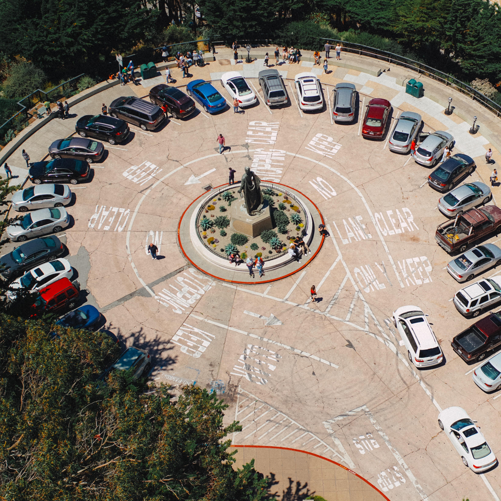

This is a website for those who wants their car to be parked but doesn't want to get any ticket or hates to drive around the block the park at a right spot. In this way drivers can leave the car at the place where they want to and have the car ready when they need it anywhere. It can be simply seen as a valet parker in the city. Furthermore, this website will allow people to park at a place for a long time at a very cheap price or no price so that a person doesn't have to worry about where to park and how long they are parking at a certain place.
